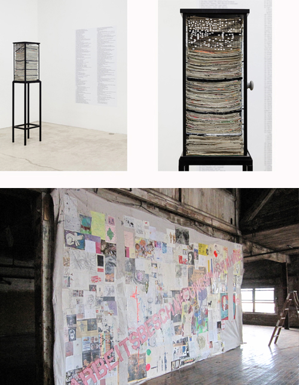

Extended through Saturday, April 12, 2014:

Images: Justin Lieberman, Arbeitsbeschaffungsmaßnahme, 2014, mixed media on canvas, vitrine, wall vinyl, dimensions variable
Justin Lieberman & Poor Working Conditions
For the final two weeks of his solo exhibition, Martos Gallery will present Arbeitsbeschaffung-smaßnahme, a work in which Justin Lieberman has assembled together 176 pieces of drawing, painting, and ephemera authored by a variety of sources, including artists AA Bronson, Kembra Pfahler, Bruce LaBruce, Kate Levant and Lieberman himself. Cut into 300 contiguous parts, the work currently lays stacked in a glass vitirine. The work's label-adhered to the side of the vtirine-acts as a documentary list and a key to the artists and materials incorporated in the piece.
Starting on Tuesday, April 1st, Arbeitsbeschaffungsmaßnahme will be on view in its entirety— hung up and reassembled back into a 10 by 16 foot picture, which exists simultaneously as a collage and a salon, a painting and a group show. Stenciled on the surface is the title of the piece, its literal English translation being "job creation scheme".
The exhibition will remain open with its concurrent group show, Poor Working Conditions, through Saturday, April 12th.
Selected Press
Artforum Critic's Pick
For additional information and more images from the exhibiton click here
For additional information and images from Poor Working Conditions click here
Martos Gallery
540 West 29th Street
New York, NY
10001
212-560-0670